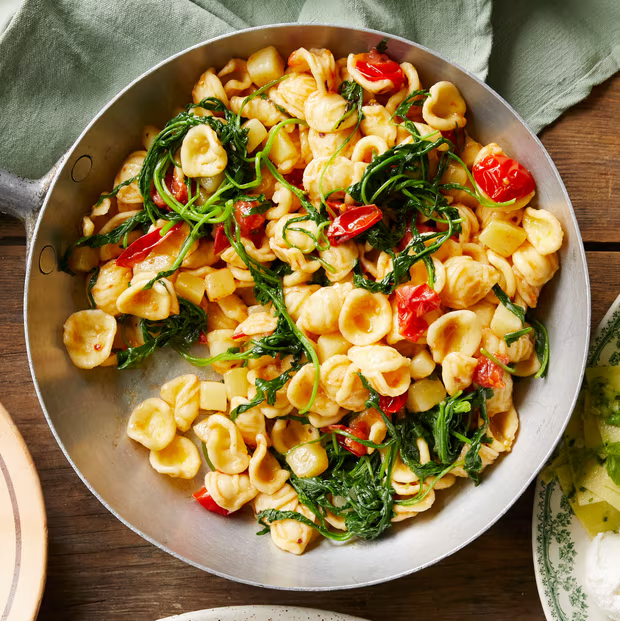

Orecchiette with tomatoes, anchovy, rocket and potato

Description
A simple, heart and summery pasta that needs little more than pantry essentials.
Ingredients
- 1 garlic clove, crushed but left whole
- 1 pinch chilli flakes
- 6 tbsp extra-virgin olive oil
- 12-15 cherry tomatoes, cut in half
- 3-6 anchovy fillets, drained
- 1 large potato, peeled and cut into 1cm cubes
- 400g dried orecchiette pasta
- 150g rocket
- toasted breadcrumbs, to serve
Steps
- In a frying pan on a low heat, fry the garlic and chilli in the oil for a couple of minutes. Raise the heat, add the tomatoes and cook for 10 minutes, pressing them down with the back of a spoon, until they go saucy. In the final two minutes, add the anchovies and press with the spoon so they break.
- Meanwhile, bring a big pan of water to a boil. Add salt, then add the potato. If using dried pasta, add it two minutes after the potato and the rocket six minutes later; if fresh, add it six minutes after the potato, along with the rocket.
- Once the pasta and potato are cooked, drain, then tip into the sauce in the frying pan and toss. Serve topped with a scattering of breadcrumbs, if you like.
Home